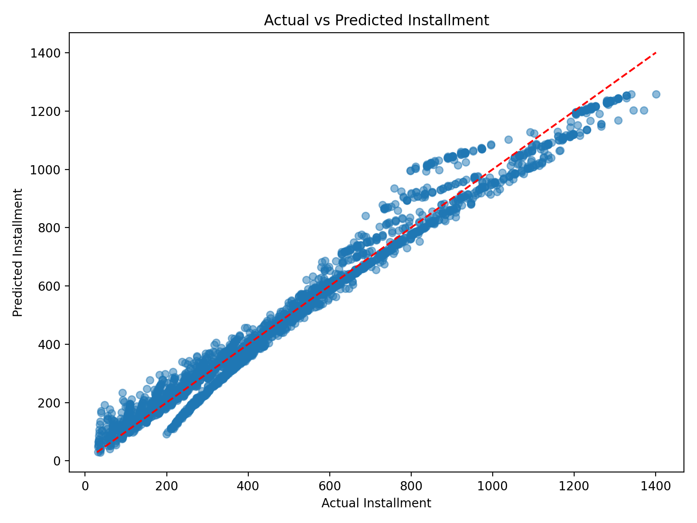
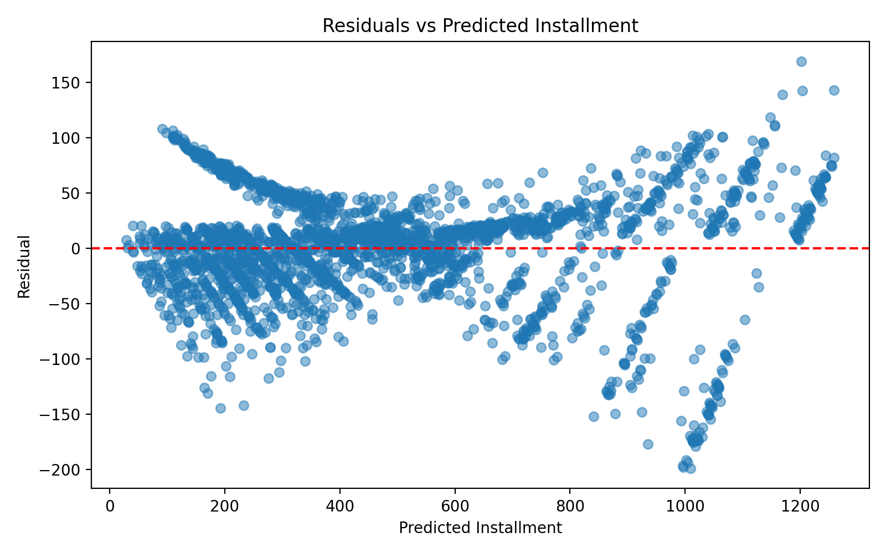

CS 432 Project Journal
Module 4 - Supervised Learning, Linear Regression
Predicting a borrower's monthly installment from loan and credit variables, and learning what that does and does not tell us.
Predicting a number instead of a category
With the unsupervised work behind me, the next stretch of the course moved into supervised learning, where the model gets to see the answer during training. Linear regression is the gentle entry point, because it predicts a number rather than a class. I pointed it at the Lending Club data and asked it to estimate a borrower's monthly installment, the fixed payment that comes due every month, which sits right on top of how much repayment pressure someone is under.
I gave the model eleven predictors drawn from the borrower and loan fields, things like annual income, debt to income, recent delinquencies and inquiries, several credit line and limit counts, and the loan amount, term, and interest rate. I deliberately left loan_status out, since this model is about estimating a payment amount, not about guessing an outcome. After filling missing values with medians and splitting the ten thousand records into training and testing sets, I trained on one slice and judged the model on loans it had never seen.
The line the model learned
Linear regression boils down to a weighted sum, one coefficient per variable plus a starting intercept. The version it settled on was this.
predicted installment = 252.3111 + 0.000010(annual_income) + 0.014942(debt_to_income) - 0.580634(delinq_2y) - 0.671438(inquiries_last_12m) + 0.136862(total_credit_lines) + 0.148893(open_credit_lines) - 0.000006(total_credit_limit) + 0.000001(total_credit_utilized) + 0.030268(loan_amount) - 8.924079(term) + 8.907469(interest_rate)
Most of that equation is noise around three numbers that do the real work. Loan amount carries a positive coefficient, which is common sense, since a bigger loan means a bigger monthly payment. Interest rate is positive too, because a costlier loan pushes the payment up. Term is negative, and that one trips people up until you think it through. Once the loan amount and rate are already in the equation, stretching the same loan over more months spreads it thinner and actually lowers the monthly figure. The model recovered all three of those relationships on its own, which was a good sign it was learning the mechanics of a loan rather than memorizing noise.
How close it got
The fit was strong. The model explained about 97.46 percent of the variation in installment on the training data and 97.66 percent on the test data, and the test figure landing slightly above the training one tells me it was not overfitting. On average its predictions missed the true installment by roughly thirty three dollars, with a root mean squared error around forty five and a half that reflects a handful of larger misses pulling the tail. Plotting actual against predicted payments, the points hug the diagonal in a tight upward band, with the only real wandering happening at the high end where a few big loans were harder to pin down.
To make the equation tangible I ran one test borrower through it by hand. This person had an income of sixty five thousand, a debt to income ratio just under nineteen, a ten thousand dollar loan over thirty six months at a rate of about six percent. Multiplying each value by its coefficient and adding the intercept, the model predicted an installment of 288.81 against an actual payment of 304.59, missing by a little under sixteen dollars. Close, but not exact, which is a fair summary of how the model behaves on any single loan.

Reading the misses, and a useful warning
The residual plot is where the model admits its limits. If the errors were purely random they would scatter evenly around zero, but instead they fan out as the predicted payment grows, staying tight for small and middling installments and spreading wide at the top, with some misses past a hundred dollars in both directions. There is faint banding in there too. Both hint that real installments follow some structured repayment rules that a straight line does not fully capture, especially for the largest payments.
The most telling experiment was comparing the full eleven variable model against a stripped down one using only loan amount, term, and interest rate. They landed at the same test accuracy of 97.66 percent, and their average errors differed by mere cents. In plain terms, almost all of the predictive power lives in those three loan structure variables, and the borrower background fields barely move the needle for this particular target. That is the headline I walked away with. This is a repayment burden model, not a default model. It does a beautiful job describing how a loan is built and what the payment will be, but it says nothing on its own about whether the borrower will actually keep up, which is exactly the gap the classification modules were built to close.
